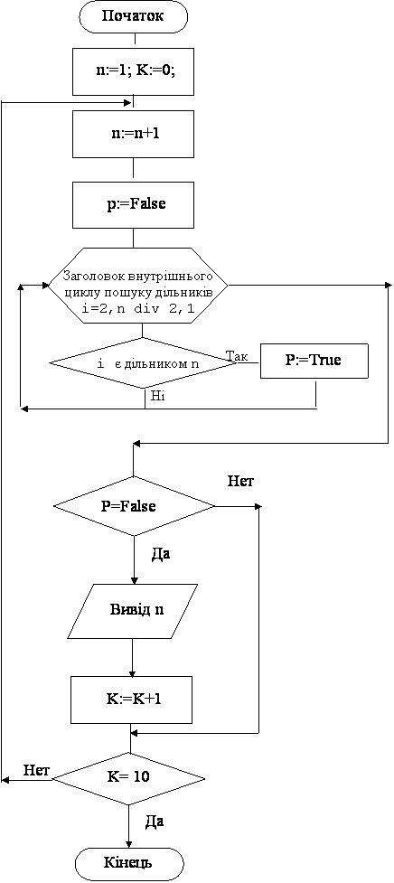

Назад
Зміст
Вперед
Задачі з вкладеними циклами
Будь-який складний алгоритм завжди складається з декількох простих алгоритмів. Потрібно навчитись їх бачити та комбінувати.
Приклад 1
Знайти 10 перших простих чисел.
В цій задачі використовуються такі алгоритми:
- Пошук декількох чисел (10), що задовольняють деякій умові (в нашій задачі: чи є число простим?);
- Визначення, чи є число простим?
Зрозуміло, що другий алгоритм вкладений у першій.
Змінні:
Вхідних даних немає.
Вихідні:
- n –шукані числа (цілого типу)
Проміжні:
- k – лічильник шуканих чисел (цілого типу)
- p – ознака наявності дільників (логічного типу, p=false немає дільників, p=true є дільники)
- i – дільники та параметр циклу (цілого типу)
Алгоритм
- Якщо згадати перший алгоритм, то у ньому:
- До циклу присвоюються початкові значення числу n та кількості чисел k.
- В тілі циклу repeat:
- Збільшується значення числа n;
- Число n перевіряється на якусь умову: якщо умова вірна, то число друкується та збільшується лічильник таких чисел k.
- Перевіряється умова завершення циклу: чи надрукована потрібна кількість таких чисел?
- Якщо так, то цикл завершується і кінець програми;
- Якщо ні, то перехід на початок тіла циклу.
- Зрозуміло, що цей алгоритм буде зовнішнім циклом у нашій програмі і перебір та перевірку чисел потрібно починати з числа 1.
- Умова, на яку у цьому циклі перевіряється число n, це – чи є це число простим? Алгоритм, який це визначає буде вкладений в перший.
- Згадаємо, що число n називається простим, якщо в нього немає дільників в інтервалі [2, n div 2].
- Тепер згадаємо другий алгоритм, який перевіряє, чи просте число n:
- До циклу присвоюємо початкове значення ознаці p:=false. Тобто вважаємо, що дільників у числа n немає.
- У циклі for i:=2 to n div 2 do будемо шукати дільники числа n. Для кожного i будемо перевіряти умову n mod i=0 и, якщо вона вірна (тобто i є дільником n), то установимо значення ознаки p:=true.
- Коли цикл закінчиться, то перевіримо значення ознаки:
- якщо p=false, то дільників немає, число n просте.
- якщо p=true, то є дільники, число не просте.
- Другий алгоритм вкладений у перший перед перевіркою числа n (виділено жирним).
Блок–схема програми

Програма
Var n,k,i:word; p:boolean;
Begin
n:=1; k:=0;
repeat
n:=n+1;
p:=false;
for i:=2 to n div 2 do
if n mod i=0 then p:=true;
if not p then
begin
write(n,' '); k:=k+1;
end;
until k=10;
end.
|
Результат роботи програми
| Відповідь |
|---|
| 2 3 5 7 11 13 17 19 23 29 |
Приклад 2
Дано натуральне число n. Знайдіть його цифровий корінь (від слова цифра, не плутати з коренем квадратним!)
Визначення
Цифровий корінь числа n це цифра (1, 2, 3,...9), яка обчислюється з цифр числа n за таким алгоритмом:
- Знайдемо у числі n суму цифр s,
- Перевіримо цю суму s:
- Якщо вона є цифрою (1, 2, 3,...9), то ця сума є цифровий корінь числа n
- Якщо вона не є цифрою (>9), то візьмемо замість числа n отриману суму цифр s та повторимо алгоритм з пункту 1.
Результат роботи програми
Змінні:
Вхідні:
- n – натуральне число (цілого типу)
Вихідні:
- сn – цифровий корінь числа n (цілого типу)
Проміжні:
- c – остання цифра числа n (цілого типу)
- s – сума цифр числа n (цілого типу)
Алгоритм
- В цій задачі використовуються такі алгоритми:
- Знаходження суми цифр числа;
- Заміна числа сумою його цифр, поки ця сума >9.
- Зрозуміло, що першій алгоритм вкладений у другий.
- Згадаємо алгоритм знаходження суми цифр числа n: обчислюємо останню цифру числа, накопичуємо її до суми і відкидаємо останню цифру від числа. Все це робимо поки не переберемо всі цифри числа (у програмі виділено жирним).
- У другому алгоритмі:
- Після знаходження суми цифр числа, замінимо число сумою його цифр (n:=s).
- Перевіримо цю суму s:
- Якщо вона є цифрою (s<=9), то цикл завершується. Виконується перехід на перший оператор після циклу (пункт 5).
- Якщо вона не є цифрою (s>9), повторимо алгоритм з пункту 3.
- Значення отриманої суми присвоюється змінній cn та виводиться на екран.
Програма
var n:longint; c,s,cn:byte;
begin
read(n);
repeat
s:=0;
repeat
c:= n mod 10;
s:=s+c;
n:=n div 10;
until n=0;
n:=s;
until s<=9;
cn:=s;
writeln(cn);
end.
|
Приклад 3
Знайдіть цифрові корені всіх простих чисел з інтервалу [100, 200]. Надрукувати число та відповідний цифровий корінь.
Результат роботи програми
| Відповідь |
|---|
| 101 2 103 4 107 8 109 1 113 5 127 1 131 5 137 2 139 4 149 5 151 7 157 4 163 1 167 5 173 2 179 8 181 1 191 2 193 4 197 8 199 1 |
Змінні:
Вхідних даних немає.
Вихідні:
- n – просте число (цілого типу)
- сn – цифровий корінь числа n (цілого типу)
Проміжні:
- i – дільники числа n та параметр циклу (цілого типу)
- p – ознака простого числа (логічного типу, p=false просте, p=true ні)
- m – копія числа n (цілого типу)
- c – остання цифра числа n (цілого типу)
- s – сума цифр числа n (цілого типу)
Алгоритм
- В цій задачі використовуються такі алгоритми:
- Перебір всіх чисел з інтервалу [100, 200].
- Для кожного з цих чисел визначення, чи є воно простим.
- Знаходження цифрового кореню кожного простого числа. Цей алгоритм в свою чергу складається з двох алгоритмів (дивись приклад 2).
- Зрозуміло, що першій алгоритм це зовнішній цикл for з параметром n. Він перебирає числа в інтервалі [100, 200].
- Другий алгоритм це пошук дільників i для кожного числа n. Це теж цикл for з параметром i (у програмі виділено жирним). Цей цикл вкладений у перший.
- Якщо число просте, тобто дільників у числі немає (p=false), то виконується третій алгоритм, обчислення цифрового кореню числа n (у програмі виділено жирним). Цей алгоритм змінює число n, яке є параметром циклу і не може змінюватись, тому робимо копію цього числа у змінній m та застосовуємо цей алгоритм для змінної m.
Програма
var n,m,i:longint; c,s,cn:byte; p:boolean;
begin
for n:=100 to 200 do
begin
p:=false;
for i:=2 to n div 2 do
if n mod i=0 then p:=true;
if p=false then
begin
m:=n;
repeat
s:=0;
repeat
c:= m mod 10;
s:=s+c;
m:=m div 10;
until m=0;
m:=s;
until s<=9;
cn:=s;
write(n,' ',cn,' ');
end;
end;
end.
|
Приклад 4
Дано натуральне число n. З’ясуйте, чи є воно симетричним (3434, 345345).
Визначення
Натуральне число n називається симетричним, якщо існує таке натуральне число m, що виконується рівність n div 10m=n mod 10m. Число m дорівнює кількості цифр у числі n, поділеній на 2.
Результат роботи програми
| Ввід | Вивід |
|---|
| 345345 | yes |
| 345 | no |
Змінні:
Вхідні:
- n – натуральне число (цілого типу)
Вихідні:
- m – степінь числа 10, половина від k кількості цифр числа (цілого типу)
Проміжні:
- i – параметр циклу (цілого типу)
- k – кількість цифр числа n (цілого типу)
- x – копія числа n (цілого типу)
- d – 10m (цілого типу).
Алгоритм
- В цій задачі використовуються такі алгоритми:
- Знаходження кількості цифр числа;
- Піднесення числа до натурального степеню.
- Зрозуміло, що алгоритми використовуються послідовно.
- Алгоритм програми докладніше:
- Вводимо число n.
- Запам’ятовуємо це число у змінну x, бо алгоритм знаходження кількості цифр у числі змінює число n.
- Встановимо початкове значення k лічильника цифр у числі.
- Використаємо алгоритм знаходження кількості цифр числа x: відкидаємо останню цифру від числа, накопичуючи лічильник k. Все це робимо поки не переберемо всі цифри числа (у програмі виділено жирним).
- Знайдемо m:=k div 2.
- Знайдемо d=10m (у програмі виділено жирним). Для цього:
- Встановимо початкове значення добутку d:=1.
- У циклі for, m раз виконаємо оператор d:=d*10.
- Порівняємо частку та остачу від ділення n на d:
- Якщо співпадають, то виводимо „число симетричне”
- Якщо не співпадають, то виводимо „число не симетричне”
Програма
var n,x,d,i,k,m:longint;
begin
read(n); x:=n;
k:=0;
repeat
k:=k+1;
x:=x div 10;
until x=0;
m:=k div 2;
d:=1;
for i:=1 to m do d:=d*10;
if n div d=n mod d then
writeln('симетричне ')
else writeln('несиметричне ');
end.
|
Приклад 5
Надрукувати перші 5 шестизначних симетричних чисел.
В цій задачі використовуються такі алгоритми:
- Пошук декількох чисел (5), що задовольняють деякій умові (в нашій задачі: чи є число симетричним?);
- Визначення, чи є число симетричним?
Зрозуміло, що другий алгоритм вкладений у першій.
Змінні:
Вхідних даних немає.
Вихідні:
- n –шукані числа (цілого типу)
Проміжні:
- t – лічильник шуканих чисел (цілого типу)
- x – копія числа n (цілого типу)
- i – параметр циклу (цілого типу)
- k – кількість цифр числа n (цілого типу)
- m – степінь числа 10, половина від k кількості цифр числа (цілого типу)
- d – 10m (цілого типу).
Алгоритм
- Якщо згадати перший алгоритм, то у ньому:
- До циклу присвоюються початкові значення числу n та кількості чисел t .
- В тілі циклу repeat:
- Збільшується значення числа n;
- Число n перевіряється на якусь умову: якщо умова вірна, то число друкується та збільшується лічильник таких чисел t.
- Перевіряється умова завершення циклу: чи надрукована потрібна кількість таких чисел?
- Якщо так, то цикл завершується і кінець програми;
- Якщо ні, то перехід на початок тіла циклу.
- Зрозуміло, що цей алгоритм буде зовнішнім циклом у нашій програмі і перебір та перевірку чисел потрібно починати з числа 100000, бо нам потрібні шестизначні числа.
- Умова, на яку у цьому циклі перевіряється число n, це – чи є це число симетричним? Алгоритм, який це визначає буде вкладений в перший.
- Тепер згадаємо другий алгоритм, який перевіряє, чи є число n симетричним:
- Обчислюємо k кількість цифр у числі;
- Обчислюємо m половину кількості цифр у числі;
- Обчислюємо d =10m.
- Перевіряємо рівність n div d=n mod d:
- Якщо рівність вірна, то число n симетричне, ми його друкуємо та збільшуємо лічильник таких чисел.
- Якщо рівність не вірна, то число n несиметричне.
- Другий алгоритм вкладений у перший перед перевіркою числа n (виділено жирним).
Програма
var n,t,k,x,m,d,i:longint;
begin
n:=100000;t:=0;
repeat
n:=n+1;
k:=0; x:=n;
repeat
k:=k+1;
x:=x div 10;
until x=0;
m:=k div 2;
d:=1;
for i:=1 to m do d:=d*10;
if n div d=n mod d then
begin
write(n,’ ‘); t:=t+1;
end;
until t=5;
end.
|
Результат роботи програми
| Відповідь |
|---|
| 100100 101101 102102 103103 104104 |
Варіанти задач
- Надрукувати всі числа з інтервалу [100, 200], цифровий корінь яких кратний 3 (3, 6, 9).
- Дано число a. Зайдіть a перших простих чисел.
- Дано число a. Знайти просте число, що більше a.
- Дано число a. Знайдіть 5 простих чисел, більших a.
- Дано число a. Знайти найближче до нього просте число.
- Знайдіть всі числа з інтервалу (100, 200), цифровий корінь яких є простим числом (1, 2, 3, 5, 7).
- Знайдіть всі числа з інтервалу (100, 200), які кратні своєму цифровому кореню.
- Знайдіть цифрові корені чисел Фібоначчи, що належать інтервалу (100, 1000).
- Обчисліть та надрукувати цифрові корені досконалих (совершенных) чисел, що належать діапазону (1; 10000). Натуральне число називається досконалим (совершенным), якщо воно дорівнює сумі своїх дільників, включаючи 1 і виключаючи само число. Наприклад, число 6 досконале (6=1+2+3).
- Знайдіть всі симетричні числа з інтервалу [10000, 1000000].
- Знайдіть всі симетричні паліндроми з інтервалу [1000000, 1000000000]. Пояснення: паліндром, це число, яке читається однаково справа наліво та зліва направо, тобто саме число дорівнює перевернутому числу.
- Надрукувати з чисел Фібоначчі в інтервалі від 1 до 100, тільки прості числа, а також їх порядкові номери в ряду Фібоначчі.
- Для всіх чисел, що належать діапазону [100; 120] обчисліть та надрукувати ті дільники, що є членами послідовності Фібоначчі.
- Надрукувати всі чотирьохзначні симетричні числа та знайдіть їх кількість.
- Знайдіть цифрові корені всіх симетричних чисел, що належать інтервалу (10000,100000).
- Надрукувати перші 10 п’ятизначних паліндромів, що є простими числами. Пояснення: паліндром, це число, яке читається однаково справа наліво та зліва направо, тобто саме число дорівнює перевернутому числу.
Назад
Зміст
Вперед